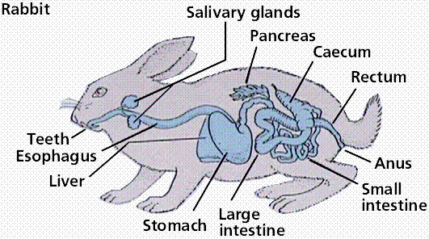
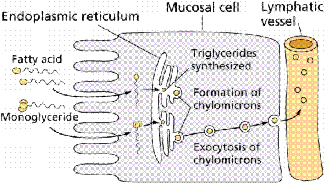
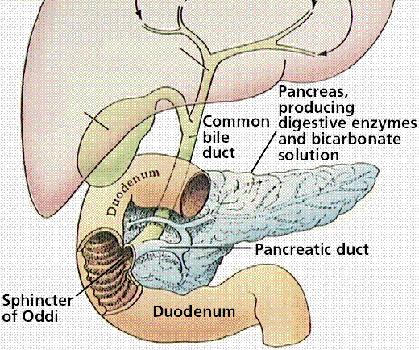
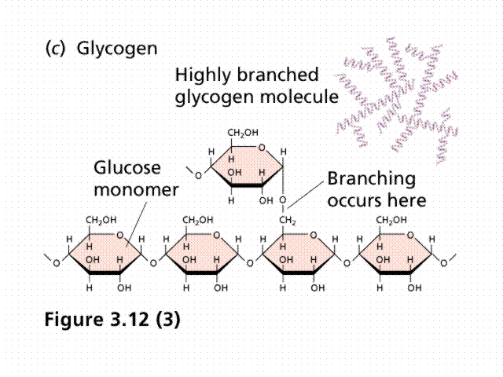

|
Figure 5. Scanning electron micrograph of the stomach lining of a mammal, X2000. This image is from http://130.102.208.100/FMRes/FMPro?-db=images.fp3&key=32819&-img, used by permission of Nanoworld. |
|
|
Digestive System | Plans and Locations | Stages in the Digestive Process
Components of the Digestive System | Regulation of Appetite | Nutrition | Learning Objectives | Links
Animals, for the most part, ingest their food as large, complex molecules that must be broken down into smaller molecules (monomers) that can then be distributed throughout the body of every cell. This vital function is accpomplished by a series of specialized organs that comprise the digestive system. Representative digestive systems are shown in Figure 1.
Single-celled organisms can directly take in nutrients from their outside environment. Multicellular animals, with most of their cells removed from contact directly with the outside environment, have developed specialized structures for obtaining and breaking down their food. Animals depend on two processes: feeding and digestion.
Animals are heterotrophs, they must absorb nutrients or ingest food sources. Ingestive eaters, the majority of animals, use a mouth to ingest food. Absorptive feeders, such as tapeworms, live in a digestive system of another animal and absorb nutrients from that animal directly through their body wall. Filter feeders, such as oysters and mussels, collect small organisms and particles from the surrounding water. Substrate feeders, such as earthworms and termites, eat the material (dirt or wood) they burrow through. Fluid feeders, such as aphids, pierce the body of a plant or animal and withdraw fluids.
Figure 1. The
digestive systems of representative animals.
Images from Purves et al., Life: The
Science of Biology, 4th Edition, by Sinauer Associates
(www.sinauer.com)
and WH Freeman (www.whfreeman.com),
used with permission. 
The digestive system uses mechanical and chemical methods to break food down into nutrient molecules that can be absorbed into the blood. Once in the blood, the food molecules are routed to every cell in the animal's body.
There are two types of animal body plans as well as two locations fordigestion to occur. Sac-like plans are found in many invertebrates, who have a single opening for food intake and the discharge of wastes. Vertebrates, the animal group humans belong to, use the more efficient tube-within-a-tube plan with food entering through one opening (the mouth) and wastes leaving through another (the anus).
Where the digestion of the food happens is also variable. Some animals use intracellular digestion, where food is taken into cells by phagocytosis with digestive enzymes being secreted into the phagocytic vesicles. This type of digestion occurs in sponges, coelenterates (corals, hydras and their relatives) and most protozoans. Extracellular digestion occurs in the lumen (or opening) of a digestive system, with the nutrient molecules being transferred to the blood or some other body fluid. This more advanced type of digestion occurs in chordates, annelids, and crustaceans.
Food for the most part consists of various organic macromolecules such as starch, proteins, and fats. These molecules are polymers made of individual monomer units (as discussed in an earlier chapter). Breaking these large molecules into smaller components involves:
Three processes occur during what we loosely refer to as "digestion". Digestion proper, which is the mechanical and chemical breakdown of food into particles/molecules small enough to pass into the blood. Absorption is the passage of food monomers into the blood stream. Assimilation is the passage of the food molecules into body cells.
The human digestive system, as shown in Figure 2, is a coiled, muscular tube (6-9 meters long when fully extended) stretching from the mouth to the anus. Several specialized compartments occur along this length: mouth, pharynx, esophagus, stomach, small intestine, large intestine, and anus. Accessory digestive organs are connected to the main system by a series of ducts: salivary glands, parts of the pancreas, and the liver and gall bladder (bilary system).
|
Figure 2. The human digestive system. Images from Purves et al., Life: The Science of Biology, 4th Edition, by Sinauer Associates (www.sinauer.com) and WH Freeman (www.whfreeman.com), used with permission. |
|
|
|
|
Mechanical breakdown begins in the mouth by chewing (teeth) and actions of the tongue. Chemical breakdown of starch by production of salivary amylase from the salivary glands. This mixture of food and saliva is then pushed into the pharynx and esophagus. The esophagus is a muscular tube whose muscular contractions (peristalsis) propel food to the stomach.
In the mouth, teeth, jaws and the tongue begin the mechanical breakdown of food into smaller particles, as shown in Figure 3. Most vertebrates, except birds (who have lost their teeth to a hardened bill), have teeth for tearing, grinding and chewing food. The tongue manipulates food during chewing and swallowing; mammals have tastebuds clustered on their tongues.
Salivary glands secrete salivary amylase, an enzyme that begins the breakdown of starch into glucose. Mucus moistens food and lubricates the esophagus. Bicarbonate ions in saliva neutralize the acids in foods.
Swallowing moves food from the mouth through the pharynx into the esophagus and then to the stomach.
Figure 3. Structure of the throat and the
mechanics of swallowing. Image from
Purves et al., Life: The Science of Biology, 4th
Edition, by Sinauer Associates (www.sinauer.com)
and WH Freeman (www.whfreeman.com),
used with permission.
|
Figure 4. Peristalsis and the movement of food from the mouth to the stomach. Image from Purves et al., Life: The Science of Biology, 4th Edition, by Sinauer Associates (www.sinauer.com) and WH Freeman (www.whfreeman.com), used with permission. |
|
|
During a meal, the stomach gradually fills to a capacity of 1 liter, from an empty capacity of 50-100 milliliters. At a price of discomfort, the stomach can distend to hold 2 liters or more.
Epithelial cells line inner surface of the stomach, as shown in Figure 5, and secrete about 2 liters of gastric juices per day. Gastric juice contains hydrochloric acid, pepsinogen, and mucus; ingredients important in digestion. Secretions are controlled by nervous (smells, thoughts, and caffeine) and endocrine signals. The stomach secretes hydrochloric acid and pepsin. Hydrochloric acid (HCl) lowers pH of the stomach so pepsin is activated. Pepsin is an enzyme that controls the hydrolysis of proteins into peptides. The stomach also mechanically churns the food. Chyme, the mix of acid and food in the stomach, leaves the stomach and enters the small intestine.
Figure 5. Scanning electron micrograph of
the stomach lining of a mammal, X2000. This image is from
http://130.102.208.100/FMRes/FMPro?-db=images.fp3&key=32819&-img,
used by permission of Nanoworld.
Hydrochloric acid does not directly function in digestion: it kills microorganisms, lowers the stomach pH to between 1.5 and 2.5; and activates pepsinogen. Pepsinogen is an enzyme that starts protein digestion. Pepsinogen is produced in cells that line the gastric pits. It is activated by cleaving off a portion of the molecule, producing the enzyme pepsin that splits off fragments of peptides from a protein molecule during digestion in the stomach.
Carbohydrate digestion, begun by salivary amylase in the mouth, continues in the bolus as it passes to the stomach. The bolus is broken down into acid chyme in the lower third of the stomach, allowing the stomach's acidity to inhibit further carbohydrate breakdown. Protein digestion by pepsin begins.
Alcohol and aspirin are absorbed through the stomach lining into the blood.
Epithelial cells secrete mucus that forms a protective barrier between the cells and the stomach acids. Pepsin is inactivated when it comes into contact with the mucus. Bicarbonate ions reduce acidity near the cells lining the stomach. Tight junctions link the epithelial stomach-lining cells together, further reducing or preventing stomach acids from passing.
Peptic ulcers result when these protective mechanisms fail. Bleeding ulcers result when tissue damage is so severe that bleeding occurs into the stomach. Perforated ulcers are life-threatening situations where a hole has formed in the stomach wall. At least 90% of all peptic ulcers are caused by Helicobacter pylori. Other factors, including stress and aspirin, can also produce ulcers.
The small intestine, shown in Figure 6, is where final digestion and absorption occur. The small intestine is a coiled tube over 3 meters long. Coils and folding plus villi give this 3m tube the surface area of a 500-600m long tube. Final digestion of proteins and carbohydrates must occur, and fats have not yet been digested. Villi have cells that produce intestinal enzymes which complete the digestion of peptides and sugars. The absorption process also occurs in the small intestine. Food has been broken down into particles small enough to pass into the small intestine. Sugars and amino acids go into the bloodstream via capillaries in each villus. Glycerol and fatty acids go into the lymphatic system. Absorption is an active transport, requiring cellular energy.
Figure 6. Structure and details of the
small intestine. Images from Purves
et al., Life: The Science of Biology, 4th Edition, by
Sinauer Associates (www.sinauer.com)
and WH Freeman (www.whfreeman.com),
used with permission.
Food is mixed in the lower part of the stomach by peristaltic waves that also propel the acid-chyme mixture against the pyloric sphincter. Increased contractions of the stomach push the food through the sphincter and into the small intestine as the stomach eempties over a 1 to 2 hour period. High fat diets significantly increase this time period.
The small intestine is the major site for digestion and absorption of nutrients. The small intestine is up to 6 meters long and is 2-3 centimeters wide. The upper part, the duodenum, is the most active in digestion. Secretions from the liver and pancreas are used for digestion in the duodenum. Epithelial cells of the duodenum secrete a watery mucus. The pancreas secretes digestive enzymes and stomach acid-neutralizing bicarbonate. The liver produces bile, which is stored in the gall bladder before entering the bile duct into the duodenum.
Digestion of carbohydrates, proteins, and fats continues in the small intestine. Starch and glycogen are broken down into maltose by small intestine enzymes. Proteases are enzymes secreted by the pancreas that continue the breakdown of protein into small peptide fragments and amino acids.
Bile emulsifies fats, facilitating their breakdown into progressively smaller fat globules until they can be acted upon by lipases. Bile contains cholesterol, phospholipids, bilirubin, and a mix of salts. Fats are completely digested in the small intestine, unlike carbohydrates and proteins.
Most absorption occurs in the duodenum and jejeunum (second third of the small intestine). The inner surface of the intestine has circular folds that more than triple the surface area for absorption. Villi covered with epithelial cells increase the surface area by another factor of 10. The epithelial cells are lined with microvilli that further increase the surface area; a 6 meter long tube has a surface area of 300 square meters.
Each villus has a surface that is adjacent to the inside of the small intestinal opening covered in microvilli that form on top of an epithelial cell known as a brush border. Each villus has a capillary network supplied by a small arteriole. Absorbed substances pass through the brush border into the capillary, usually by passive transport.
Maltose, sucrose, and lactose are the main carbohydrates present in the small intestine; they are absorbed by the microvilli. Starch is broken down into two-glucose units (maltose) elsewhere. Enzymes in the cells convert these disaccharides into monosaccharides that then leave the cell and enter the capillary. Lactose intolerance results from the genetic lack of the enzyme lactase produced by the intestinal cells.
Peptide fragments and amino acids cross the epithelial cell membranes by active transport. Inside the cell they are broken into amino acids that then enter the capillary. Gluten enteropathy is the inability to absorb gluten, a protein found in wheat.
Digested fats are not very soluble. Bile salts surround fats to form micelles, as shown in Figure 7, that can pass into the epithelial cells. The bile salts return to the lumen to repeat the process. Fat digestion is usually completed by the time the food reaches the ileum (lower third) of the small intestine. Bile salts are in turn absorbed in the ileum and are recycled by the liver and gall bladder. Fats pass from the epithelial cells to the small lymph vessel that also runs through the villus.
Figure 7.
Absorption of lipids by cells in the small
intestine. Images from Purves et al.,
Life: The Science of Biology, 4th Edition, by Sinauer
Associates (www.sinauer.com)
and WH Freeman (www.whfreeman.com),
used with permission. 
The liver produces and sends bile to the small intestine via the hepatic duct, as illustrated in Figure 8. Bile contains bile salts, which emulsify fats, making them susceptible to enzymatic breakdown. In addition to digestive functions, the liver plays several other roles: 1) detoxification of blood; 2) synthesis of blood proteins; 3) destruction of old erythrocytes and conversion of hemoglobin into a component of bile; 4) production of bile; 5) storage of glucose as glycogen, and its release when blood sugar levels drop; and 6) production of urea from amino groups and ammonia.
Figure 8. The liver and associated organs
and their connections to the digestive system.
Images from Purves et al., Life: The
Science of Biology, 4th Edition, by Sinauer Associates
(www.sinauer.com)
and WH Freeman (www.whfreeman.com),
used with permission. 
The gall bladder stores excess bile for release at a later time. We can live without our gall bladders, in fact many people have had theirs removed. The drawback, however, is a need to be aware of the amount of fats in the food they eat since the stored bile of the gall bladder is no longer available.
Glycogen is a polysaccharide made of chains of glucose molecules, as shown in Figure 9. In plants starch is the storage form of glucose, while animals use glycogen for the same purpose. Low glucose levels in the blood cause the release of hormones, such as glucagon, that travel to the liver and stimulate the breakdown of glycogen into glucose, which is then released into the blood(raising blood glucose levels). When no glucose or glycogen is available, amino acids are converted into glucose in the liver. The process of deamination removes the amino groups from amino acids. Urea is formed and passed through the blood to the kidney for export from the body. Conversely, the hormone insulin promotes the take-up of glusose into liver cells and its formation into glycogen.
Figure 9. Glycogen structure. Note the
individual glucose molecules that are linked to form
glycogen. Image from http://www.bio.brandeis.edu/classes/bio18/glycogen.gif.

Jaundice occurs when the characteristic yellow tint to the skin is caused by excess hemoglobin breakdown products in the blood, a sign that the liver is not properly functioning. Jaundice may occur when liver function has been impaired by obstruction of the bile duct and by damage caused by hepatitis.
Hepatitis A, B, and C are all viral diseases that can cause liver damage. Like any viral disease, the major treatment efforts focus on treatment of symptoms, not removal of the viral cause. Hepatitis A is usually mild malady indicated by a sudden fever, malaise, nausea, anorexia, and abdominal discomfort. Jaundice follows up for several days. The virus causing Hepatitis A is primarilly transmitted by fecal contamination, although contaminated food and water also can promote transmission. A rare disease in the United States, hepatitis B is endemic in parts of Asia where hundreds of millions of individuals are possibly infected.
Hepatitis B may be transmitted by blood and blood products as well as sexual contact. The blood supply in developed countries has been screened for the virus that causes this disease for many years and transmission by blood transfusion is rare. The risk of HBV infection is high among promiscuous homosexual men although it is also transmitted hetereosexually. Correct use of condoms is thought to reduce or eliminate the risk of transmission. Effective vaccines are available for the prevention of Hepatitis B infection. Some individuals with chronic hepatitis B may develop cirrhosis of the liver. Individuals with chronic hepatitis B are at an increased risk of developing primary liver cancer. Although this type of cancer is relatively rare in the United States, it is the leading cause of cancer death in the world, primarily because the virus causing it is endemic in eastern Asia.
Hepatitis C affects approximately 170 million people worldwide and 4 million in the United States. The virus is transmitted primarily by blood and blood products. Most infected individuals have either received blood transfusions prior to 1990 (when screening of the blood supply for the Hepatitis C virus began) or have used intravenous drugs. Sexual transmission can occur between monogamous couples (rare) but infection is far more common in those who are promiscuous. In rare cases, Hepatitis C causes acute disease and even liver failure. About twenty percent of individuals with Hepatitis C who develop cirrhosis of the liver will also develop severe liver disease. Cirrhosis caused by Hepatitis C is presently the leading cause of the need for liver transplants in the United States. Individuals with cirrhosis from Hepatitis C also bear increased chances of developing primary liver cancer. All current treatments for Hepatitis C employ of various preparations of the potent antiviral interferon alpha. However, not all patients who have the disease are good candidates for treatment, so infected individuals are urged to regularly consult their physician.
Cirrhosis of the liver commonly occurs in alcoholics, who place the liver in a stress situation due to the amount of alcohol to be broken down. Cirrhosis can cause the liver to become unable to perform its biochemical functions. Chemicals responsible for blood clotting are synthesized in the liver, as is albumin, the major protein in blood. The liver also makes or modifies bile components. Blood from the circulatory system passes through the liver, so many of the body's metabolic functions occur primarily there including the metabolism of cholesterol and the conversion of proteins and fats into glucose. Cirrhosis is a disease resulting from damage to liver cells due to toxins, inflammation, and other causes. Liver cells regenerate in an abnormal pattern primarily forming nodules that are surrounded by fibrous tissue. Changes in the structure of the liver can decrease blood flow, leading to secondary complications. Cirrhosis has many cuses, including alcoholic liver disease, severe forms of some viral hepatitis, congestive heart failure, parasitic infections (for example schistosomiasis), and long term exposure to toxins or drugs.
The pancreas sends pancreatic juice, which neutralizes the chyme, to the small intestive through the pancreatic duct. In addition to this digestive function, the pancrease is the site of production of several hormones, such as glucagon and insulin.
The pancreas contains exocrine cells that secrete digestive enzymes into the small intestine and clusters of endocrine cells (the pancreatic islets). The islets secrete the hormones insulin and glucagon, which regulate blood glucose levels.
After a meal, blood glucose levels rise, prompting the release of insulin, which causes cells to take up glucose, and liver and skeletal muscle cells to form the carbohydrate glycogen. As glucose levels in the blood fall, further insulin production is inhibited. Glucagon causes the breakdown of glycogen into glucose, which in turn is released into the blood to maintain glucose levels within a homeostatic range. Glucagon production is stimulated when blood glucose levels fall, and inhibited when they rise.
Diabetes results from inadequate levels of insulin. Type I diabetes is characterized by inadequate levels of insulin secretion, often due to a genetic cause. Type II usually develops in adults from both genetic and environmental causes. Loss of response of targets to insulin rather than lack of insulin causes this type of diabetes. Diabetes may cause impairment in the functioning of the eyes, circulatory system, nervous system, and failure of the kidneys. Diabetes is the second leading cause of blindness in the United States. Treatments might involve daily injections of insulin, oral medications such as metformin, monitoring of blood glucose levels, and a controlled diet. Type I diabetes may one day be cured by advances in gene therapy/stem cell research. On recently recognized condition is known as prediabetes, in which the body gradually loses its sensitivity to insulin, leading eventually to Type II diabetes. Ora; medications, diet and behavior (in other words EXERCISE!!!) changes are thought to delay if not outright postpone the onset of diabetes if corrected soon enough.
The fifth leading cause of cancer death in the United States is from pancreatic cancer, which is nearly always fatal. Scientists estimate that 25,000 people may die from this disease each year. Standard treatments are ineffective, although some promising avenues may open with advances in genomics and molecular biology of cancer cells.
The large intestine is made up by the colon, cecum, appendix, and rectum. Material in the large intestine is mostly indigestible residue and liquid. Movements are due to involuntary contractions that shuffle contents back and forth and propulsive contractions that move material through the large intestine. The large intestine performs three basic functions in vertebrates: 1) recovery of water and electrolytes from digested food; 2) formation and storage of feces; and 3) microbial fermentation: The large intestine supports an amazing flora of microbes. Those microbes produce enzymes that can digest many of molecules indigestible by vertebrates.
Secretions in the large intestine are an alkaline mucus that protects epithelial tissues and neutralizes acids produced by bacterial metabolism. Water, salts, and vitamins are absorbed, the remaining contents in the lumen form feces (mostly cellulose, bacteria, bilirubin). Bacteria in the large intestine, such as E. coli, produce vitamins (including vitamin K) that are absorbed.
The hypothalamus in the brain has two centers controlling hunger. One is the appetite center, the other the satiety center.
Gastrin, secretin, and cholecystokinin are hormones that regulate various stages of digestion. The presence of protein in the stomach stimulates secretion of gastrin, which in turn will cause increased stomach acid secretion and mobility of the digestive tract to move food. Food passing into the duodenum causes the production of secretin, which in turn promotes release of alkaline secretions from the pancreas, stops further passage of food into the intestine until the acid is neutralized. Cholecystokinin (CCK) is released from intestinal epithelium in response to fats, and causes the release of bile from the gall bladder and lipase (a fat digesting enzyme) from the pancreas.
Nutrition deals with the composition of food, its energy content, and slowly (or not at all) synthesized organic molecules. Chemotrophs are organisms (mostly bacteria) deriving their energy from inorganic chemical reactions. Phototrophs convert sunlight energy into sugar or other organic molecules. Heterotrophs eat to obtain energy from the breakdown of organic molecules in their food.
Macronutrients are foods required on a large scale each day. These include carbohydrates, lipids, and amino acids. Water is essential, correct water balance is a must for proper functioning of the body.
About 60% of the diet should be carbohydrates, obtained from foods such as milk, meat, vegetables, grains and grain products. The diet should contain at least 100 grams of carbohydrate every day. Recently, however, new recommendations have been developed that suggest a lowering of the amount of carbohydrate. A more detailed presentation of this topic may be fount at http://health.discovery.com/diseasesandcond/encyclopedia/2935.html.
Proteins are polymers composed of amino acids. Proteins are found in meat, milk, poultry, fish, cereal grains and beans. They are needed for cellular growth and repair. Twenty amino acids are found in proteins, of which humans can make eleven. The remaining nine are the essential amino acids which must be supplied in the diet. Normally proteins are not used for energy, however during starvation (or a low-carb diet) muscle proteins are broken down for energy. Excess protein can be used for energy or converted to fats.
Lipids and fats generate the greatest energy yield, so a large number of plants and animals store excess food energy as fats. Lipids and fats are present in oils, meats, butter, and plants (such as avocado and peanuts). Some fatty acids, such as linoleic acid, are essential and must be included in the diet. When present in the intestine, lipids promote the uptake of vitamins A, D, E, and K.
Vitamins are organic molecules required for metabolic reactions. They usually cannot be made by the body and are needed in trace amounts. Vitamins may act as enzyme cofactors or coenzymes. Some vitamins are soluble in fats, some in water.
Minerals are trace elements required for normal metabolism, as components of cells and tissues, and for nerve conduction and muscle contraction. They can only be obtained from the diet. Iron (for hemoglobin), iodine (for thyroxin), calcium (for bones), and sodium (nerve message transmission) are examples of minerals.
There is a quantitative relationship between nutrients and health. Imbalances can cause disease. Many studies have concluded nutrition is a major factor in cardiovascular disease, hypertension, and cancer.
|
assimilation |
chyme |
||||
|
cirrhosis |
|||||
Under Construction
Back to Table of Contents | THE NERVOUS SYSTEM
Email: mj.farabee@emcmail.maricopa.edu
Last modified:
The URL of this page is:
{kind=link}